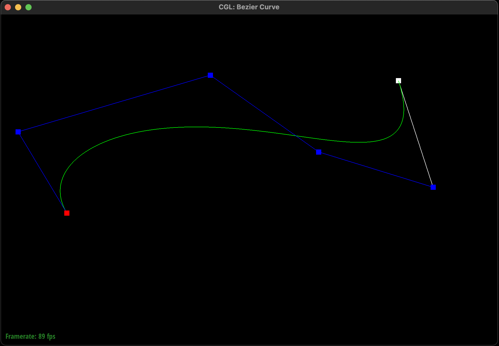
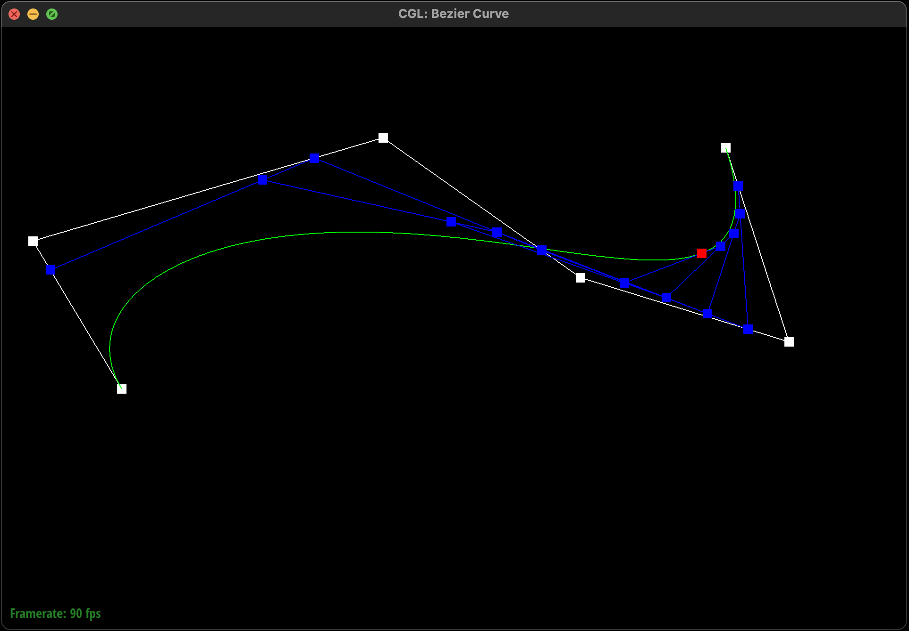
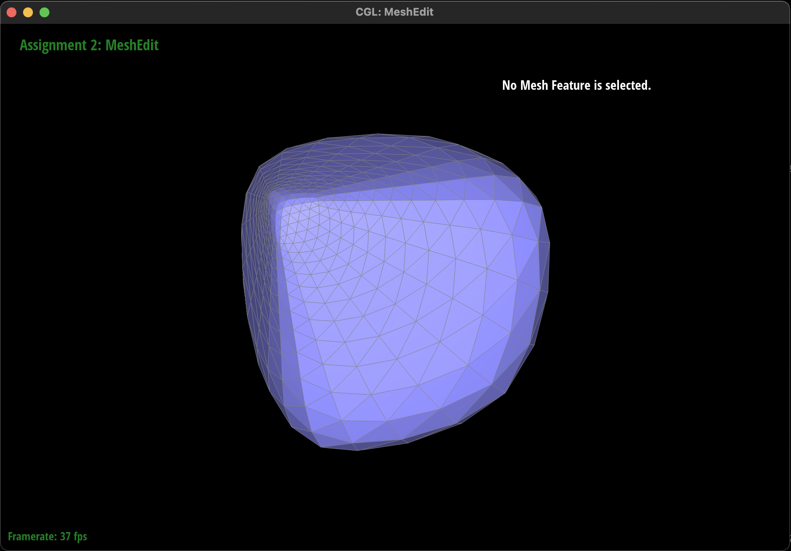

CS184 Homework 2
Jay Chiang (3035782580)
GitHub Pages Link:
https://cal-cs184-student.github.io/hw-webpages-sp24-jayc809/hw2/index.html
Part 1: Bezier Curves with 1D de Casteljau Subdivision (10 pts)
The goal of this part is to derive each level of a Bezier curve using the
de Casteljau subdivision algorithm. The idea is very simple, for a curve
with n control points, we should have n levels each corresponding to their
respective number of points. In other words, the last level would have
just one point - the coordinate of the curve at parameter t. The recursive
subdivision step is quite simple to implement as well, for each pair of
consecutive points, we linearly interpolate their values using t and add
the result to the returned list.
As we can see below in the first example, the algorithm correctly
calculates the points at each level, creating the smooth curve specified
by the control points. In the second example, we can see how the parameter
t influences the linear interpolation at each level.


Part 2: Bezier Surfaces with Separable 1D de Casteljau (15 pts)
We now shift our focus to generating Bezier surfaces to view 3D models.
The concept behind Bezier surfaces is almost identical to Bezier curves,
only that instead of performing recursive subdivision on just one
dimension over paramter t, we now do it across two dimensions over
parameters u and v. In practice, given an n by n matrix of control points,
we 1. perform de Casteljau with parameter u over the inner dimension,
attaining n points along the "u axis", and then 2. interpolate with
parameter v over the n points from step 1, attaining the single point
along the "v axis" specified by parameters (u, v).
As we can see below, we can now render out the teapot model.
Part 3: Area-Weighted Vertex Normals (10 pts)
We can see that flat shading results in models that have noticeable edges,
varying color patches, and unsmooth transitions between faces. We will
improve this via Phong shading, where we attempt to simulate how light
reflects off of each vertex. In order to estimate the normal of a vertex
(and subsequently how it interacts with light), we will take the
area-weighted sum of the normals of its neighboring faces. This makes
sense conceptually as the bigger flat-ish geometry of a curved surface
would probably have more influence on the overall reflection compared to a
smaller section. My implementation follows the general structure provided
in the spec where I 1. loop over each triangle connected to the vertex, 2.
find the positions of its three vertices by looping over each edge, 3.
calculate its normal and area, and 4. taking the weighted sum of the
normal across all triangles.
As we can see below, the model using Phong shading appears much smoother
than that using flat shading.
Part 4: Edge Flip (15 pts)
For this section, we implement edge flip, which basically allows us to
change the orientation of the connecting edge between two triangles. The
algorithm is not particularly complicated, but is quite hard to explain.
Therefore, I created the graphic below so that the explanation can be a
bit simpler. The basic idea is to represent any pair of adjacent triangles
and their common edge by the left diagram. The position, orientation,
shape of the actual triangles don't really matter too much since the neat
part about using the half edge data structure is that every element
(vertex, edge, face) can be deterministically ordered and accessed
relative to one another. Our goal essentially is to go from the left
diagram to the right. This is straightforward as we simply reassign the
pointers for each relevant element and half edge. For example, in order to
modify
Hb into Ha, we need to change its vertex from
Vb to Va as well as its next half edge from
H0c to H1d as shown below.
Before implementation, I followed the spec and drew a detailed diagram
(similar to the one above) of how everything needs to change and made sure
that I am familiar with the different data structures. Therefore, the
process was smooth and I didn't have to do too much debugging.
We can see that from the results below that I was able to create a nice
zig-zag pattern by flipping certain edges.
Part 5: Edge Split (15 pts)
In this part we implement edge split. Given an edge of a pair of adjacent
triangles, we wish to split the edge with a new vertex and create four
triangles out of it. The general idea is more or less the same as the
previous part, where we redirect pointers and modify properties of
relevant elements. However, there is one difference being that we now need
to create additional elements as well. As shown below in cyan, we need to
create one new vertex, two new faces, three new edges, and six new half
edges. Moreover, we also need to reuse certain elements like we did in the
previous part. As shown in the pairs of same color labels between the left
and right diagrams (green, orange, red, purple, blue), we also need to
reassign the pointers for one edge, two faces, and two half edges.
Similar to before, I sketched out a diagram before implementing the
feature and was very careful with every line of code. As a result, I
didn't really have too many bugs. The only issue I had was that I forgot
to set the position of the new vertex Vm, which was very
easily identified.
We can now successfully split an edge and create complex surfaces. The
edge split and edge flip functionalities also work well together and can
complement each other to create even more complex shapes and surfaces.
Part 6: Loop Subdivision for Mesh Upsampling (25 pts)
Finally, we implement mesh upsampling via loop subdivision. The idea is
simple, we improve the coarseness of a mesh by adding interpolated
vertices between existing ones. Specifically, we want to split each face
into four triangles. I followed the algorithm suggested by the skeleton
code for this task. First, we compute the new positions for both exisiting
and new vertices after upsampling according to the formulas explained in
the spec and store them into theor respective data structures. Then, we
perform the 4-1 subdivision by first splitting every existing edge and
then flipping every new edge that connects an existing to a new vertex
using the functions we implemented earlier. Finally, we assign each vertex
to its precalculated new position.
Of course, many bugs came up during the implementation stage. For example,
I realized that I have implemented the edge flip and edge split
functionalities incorrectly, where I erroneously assigned the half edge of
each vertex to its original value (i.e. implicitly no change) as opposed
to explicitly setting it to one of its connected edges. This bug was
discovered because after the first three or so upsampling, although the
general shape of the mesh is correct, there would be certain areas
protruding or caving in. I suspect this is due to the fact that after a
split or flip, there is a chance that the vertex's original edge would end
up on another vertex, which is why the issue seemingly only shows up at
random places and would worsen over time. Another issue was that I forgot
to set the
isNew flag on the newly created elements, which made
discerning a new/existing edge impossible. Finally, one other bug was that
instead of setting isNew to false, I ended up
overwriting the previously modified newPosition to
false. This was a hard bug to find as I couldn't figure out
why my vertices were collapsing to (0, 0, 0).
The results of upsampling is shown below. We can see that my results for
the cube and icosahedron both match the expectations.
Furthermore, we can see that for the sharp corners and edges of our
meshes, they get smoothened out and become more round across the
upsampling levels. This is expected as the algorithm basically
interpolates vertex positions by fitting it onto the imaginary curved
surface bounded by the surrounding vertices, which overall creates an
smoothening effect. For a protruding vertex, it would be pushed inwards,
and for a caved vertex, it would be pulled outwards. We can trace this
back to the formulas for calculating the new positions for both new and
existing vertices, where the sum of neighboring vertex positions directly
influences the result. Consequently, one way to preserve sharpness is to
make the neighbors closer to the vertex. Mathematically at the extreme
end, we know that if all neighboring vertices are exactly at the same
position as the vertex, then its position will not change at all.
Therefore, as I have demonstrated below, by surrounding the corner vertex
with a small cube of vertices, its position is "localized" and I was able
to preserve its sharpeness.

Lastly, we can see from the previous examples that there seems to be some
asymmetry when a mesh is upsampled. The reasoning behind this effect is
basically the same as the one for the aforementioned loss of sharpness,
where it came down to the distribution of neighboring vertices. As we can
see from the graphic below, although both red and blue are both corners of
a square and should therefore be symmetrical, their new positions will not
be calculated the same way. This is because not only does red have one
additional neighbor, but also one that is further along the diagonal than
the rest.

Therefore, to eliminate this effect, we can simply preprocess the mesh so
that the vertices that should be symmetrical have symmetrical neighbor
distributions. As shown below, instead of constructing each face of the
cube with two triangles, I used four, which makes every vertex have
symmetrical neighbors, both in terms of their number and their positions.
Conclusion
Similar to project 1, this project reinforced a lot of ideas explained in
lecture that I kinda just brushed through and did not get too familiar
with. While this project for the most part is very straightforward, going
through with the implementation of concepts such as 1D and 2D de Casteljau
interpolation and 4-1 subdivision were still very beneficial to
understanding the logic behind them. Moreover, trying to eliminate
asymmetry or enforce corner sharpness also encouraged me to get behind why
the upsampled meshes develop to be the way they are. The debugging was
also certainly challenging due to errors in previous parts that I did not
recognize. Overall, this project was great for learning and I enjoyed it a
lot.